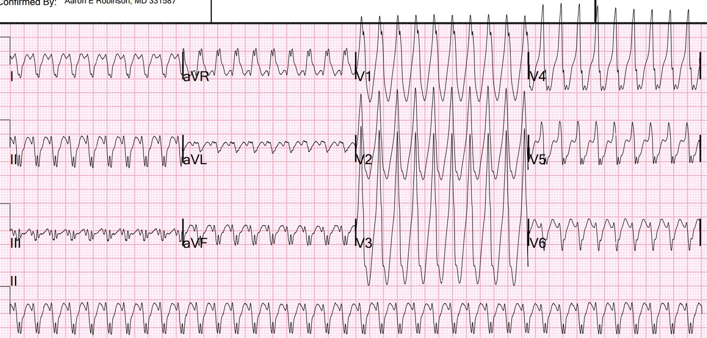
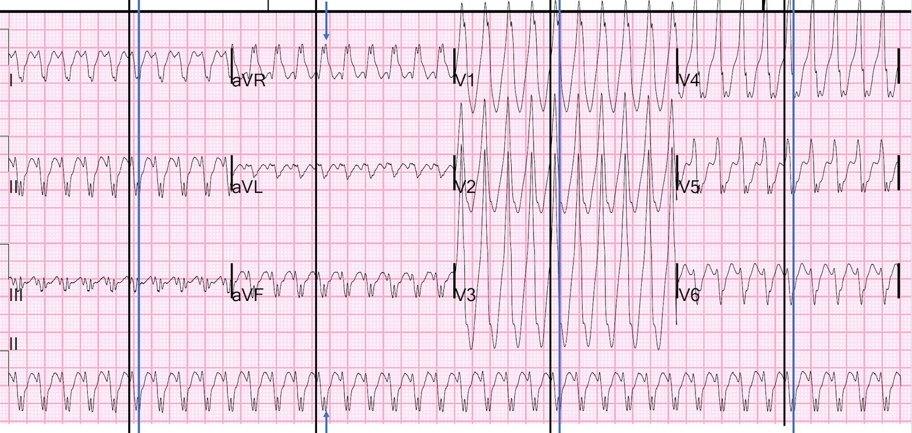
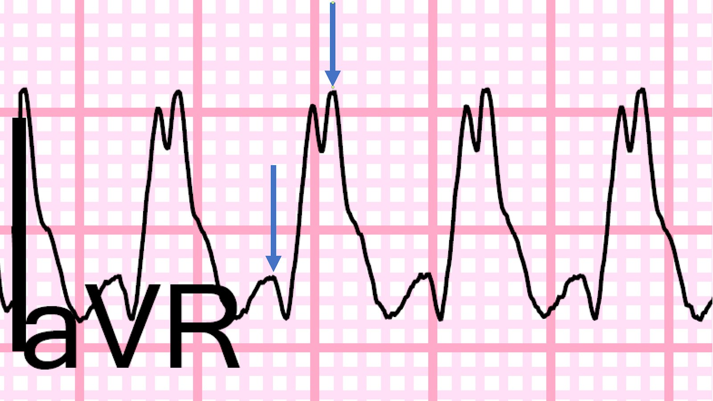
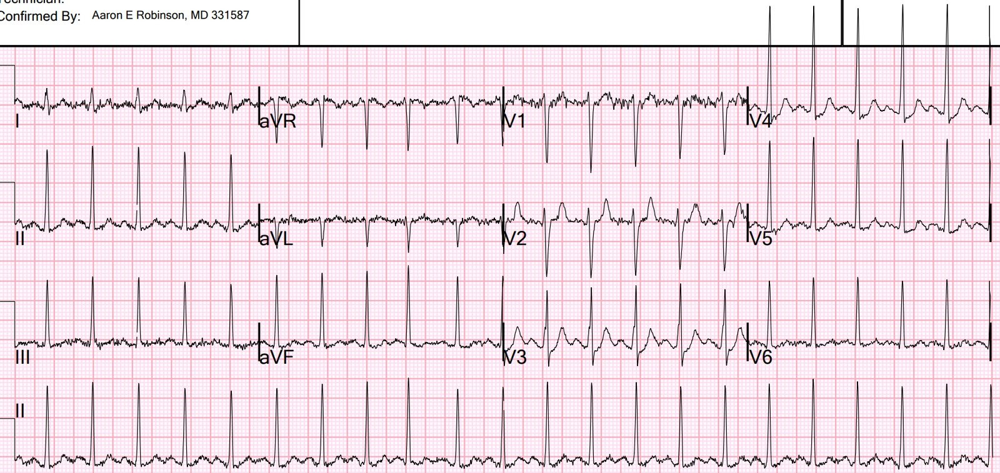

14/05/2022 — Một người 30 mấy tuổi bị hồi hộp đánh trống ngực và choáng váng
Bản dịch tiếng Việt của bài "A 30-something with palpitations and lightheadedness" – Dr. Smith’s ECG Blog. Giữ nguyên toàn bộ 6 hình ảnh của bản gốc.
Một nam giới 30 mấy tuổi, không có tiền sử bệnh lý đáng kể, đến viện vì hồi hộp đánh trống ngực và tiền ngất.
Đây là điện tâm đồ của anh ấy tại khoa cấp cứu (ED):


Nhịp nhanh QRS rộng đều với tần số 229
Thứ nhất: Bạn muốn làm gì?
Tiếp theo: Bạn nghĩ chẩn đoán điện tâm đồ là gì?
Thứ nhất. Trước khi đi vào phân tích, một nhịp nhanh QRS rộng đều có thể là
1. nhịp nhanh thất (VT) hoặc
2. nhịp nhanh vào lại nhĩ thất (AVRT, WPW ngược chiều) hoặc
3. SVT kèm dẫn truyền lệch hướng. (SVT thường sẽ là AVNRT hoặc WPW xuôi chiều)
Vì adenosine an toàn trong VT, và có hiệu quả với AVRT và AVNRT, nên đáng để thử adenosine. Hoặc, tất nhiên, bạn luôn có thể dùng sốc điện chuyển nhịp.
Các bác sĩ đã cho 6 mg adenosine nhưng không có đáp ứng, sau đó tiến hành sốc điện chuyển nhịp.
Đây là tin nhắn tôi trả lời: “VT hoặc AVRT. (WPW ngược chiều). Tôi chắc là các bạn đã sốc điện rồi, phải không?”
Tiếp theo. Phân tích điện tâm đồ: Đây là một nhịp nhanh QRS rộng đều. Không có sóng P. Phần khởi đầu QRS rất chậm. Xem các chuyển đạo phóng to bên dưới. Thời gian từ khởi đầu QRS đến đỉnh khoảng 110 ms.
Khoảng này quá dài đối với cả AVNRT lẫn VT vô căn. Nói ngắn gọn, VT vô căn là VT xảy ra ở một trái tim mà ngoài ra là bình thường, khởi phát trong mô dẫn truyền và do đó có phần khởi đầu nhanh, tương tự SVT kèm dẫn truyền lệch hướng). Xem bài này: Idiopathic Ventricular Tachycardias for the EM Physician (Nhịp nhanh thất vô căn dành cho bác sĩ cấp cứu).
Phần khởi đầu chậm như vậy phù hợp với VT trong bối cảnh bệnh cơ tim, hoặc với AVRT.
Ở đây tôi đặt các đường kẻ, hoặc mũi tên, tại điểm khởi đầu (màu đen) và điểm kết thúc của PHẦN KHỞI ĐẦU (màu xanh) của QRS. Tôi bắt đầu ở chuyển đạo II phía dưới cùng, nơi dễ thấy điểm khởi đầu nhất.




QRS ở aVR bắt đầu bằng một sóng q 40 ms (xem chỗ trũng xuống sau mũi tên màu xanh). Phần khởi đầu của QRS kết thúc ở đỉnh thứ 2. Như vậy, QRS từ khởi đầu đến đỉnh (quá trình khử cực ban đầu) mất khoảng 110 ms.
Khoảng này bị kéo dài, và sẽ không chậm như vậy nếu xung động đi qua mô dẫn truyền, như trong AVNRT hoặc VT vô căn.
Đây là điện tâm đồ sau sốc điện chuyển nhịp (được nhắn tin cho tôi):


Đây là tin nhắn tôi trả lời: “Có thể là WPW. Không phải lúc nào bạn cũng thấy sóng delta.”
Sau sốc điện chuyển nhịp, siêu âm tim cho thấy chức năng thất trái rất tốt.
Phân tích cuối cùng:
1. Chức năng thất trái tốt có nghĩa là nếu đây là VT thì nhiều khả năng đó là VT vô căn
2. Nhưng VT vô căn phải có phần khởi đầu nhanh
3. Ca này có phần khởi đầu chậm, nên khó có khả năng là loại VT nào trong hai loại trên.
4. Cuối cùng, VT đường ra thất phải, loại đáp ứng với adenosine, có hình dạng LBBB và trục hướng xuống dưới, điều không có ở đây.
5. Do đó AVRT là khả năng cao nhất, mặc dù không có sóng delta.
Đây là ghi chú của bác sĩ điện sinh lý của chúng tôi:
“… Mặc dù
hình dạng phù hợp với nhịp nhanh thất, chúng tôi không thể
loại trừ hoàn toàn AVRT ngược chiều xuất phát từ vị trí bám tận ở đáy thất trái
của một đường phụ. Điện tâm đồ khi nhịp xoang
không cho thấy tiền kích thích rõ rệt, nhưng chúng tôi sẽ lưu ý rằng
các đường phụ bên trái có thể không biểu hiện tiền kích thích rõ rệt khi
nhịp xoang, vì điều này về cơ bản phụ thuộc vào mức dẫn truyền tương đối
của nút AV so với đường phụ (nếu
có).”
Kết cục
Thăm dò điện sinh lý cho thấy có đường phụ (WPW, AVRT ngược chiều)
Tại sao adenosine không hiệu quả? Liều 6 mg thường không hiệu quả, đặc biệt trong các tình trạng lưu lượng thấp. Bác sĩ điện sinh lý của chúng tôi, Rehan Karim, giải thích: “Ở tần số tim này, nói chung có thể dự đoán rằng thời gian vận chuyển tổng thể của bất kỳ thuốc tiêm tĩnh mạch nào để đến được tim sẽ rất chậm. Như bạn biết, adenosine có thời gian bán thải rất ngắn, nên một liều nhỏ như thế này có lẽ sẽ tan biến trước khi đến được vùng đích.”
Bác sĩ Karim viết thêm một số điều cần nhớ then chốt như sau:
1. Mức độ tiền kích thích (“WPW”) khi nhịp xoang phụ thuộc vào sự cạnh tranh giữa nút AV và đường phụ – và cũng chịu ảnh hưởng bởi vị trí tương đối của đường phụ. Nếu tôi sống ở vùng ngoại ô phía Tây của Twin Cities, có lẽ tôi sẽ đi đường I-35 W thay vì I-35 E, trừ khi đường đó bị chặn vì lý do nào đó.
Vì vậy, nếu bạn không thấy tiền kích thích khi nhịp xoang, điều đó không có nghĩa là không thể có tiền kích thích – vì nút xoang là cấu trúc của nhĩ phải, và các đường phụ bên trái có thể không biểu hiện tiền kích thích rõ rệt nếu người đó có nút AV dẫn truyền nhanh!
2. Về hình dạng, AVRT ngược chiều sẽ đáp ứng tiêu chuẩn của “VT” xuất phát từ “vị trí bám tận” của đường phụ – vì về cơ bản đó chính là nơi khởi phát hoạt hóa thất. Tuy nhiên, nó KHÔNG BAO GIỜ có thể có QRS đồng hướng âm – vì các đường phụ thường bám tận ở đáy tim chứ không phải ở mỏm tim!

===================================
BÌNH LUẬN CỦA TÔI, bởi KEN GRAUER, MD (14/5/2022):
===================================
Điều tôi thích nhất ở ca hôm nay — là việc bác sĩ Smith sử dụng khéo léo siêu âm tim tại giường ở khoa cấp cứu để hỗ trợ chẩn đoán nhịp! Tôi xin bổ sung các bình luận sau vào chiến lược ra quyết định lâm sàng xuất sắc của ông.
- Theo bác sĩ Smith — nhịp ban đầu trong ca hôm nay là một WCT ( = nhịp nhanh QRS rộng – Wide-Complex Tachycardia) đều với tần số ~230/phút, không có dấu hiệu rõ ràng của hoạt động nhĩ. Bác sĩ Smith đề xuất Chẩn đoán Phân biệt sau đây cho nhịp WCT này: i) VT; ii) AVRT ngược chiều (ở bệnh nhân có WPW); và/hoặc, iii) SVT kèm dẫn truyền lệch hướng.
- Tôi xin bổ sung: iv) SVT kèm BBB (blốc nhánh – Bundle Branch Block) có sẵn từ trước vào chẩn đoán phân biệt ở trên — vì thay vì một phức bộ QRS ban đầu hẹp (biểu hiện dẫn truyền lệch hướng do tần số nhanh) — nguyên nhân của nhịp WCT đều này có thể là một SVT trong đó QRS vốn đã giãn rộng (tức là BBB “có sẵn từ trước”).
- Bác sĩ Smith thu hẹp chẩn đoán phân biệt có khả năng đối với SVT dẫn truyền lệch hướng xuống còn một trong hai: AVNRT hoặc AVRT xuôi chiều. Đó là vì tần số thất ~230/phút trên bản ghi hôm nay là quá nhanh đối với nhịp nhanh xoang ở người lớn — chậm hơn mức dự kiến đối với AFlutter 1:1 — và — nhanh hơn mức dự kiến đối với AFlutter 2:1. Mặc dù nhịp nhanh nhĩ có thể xảy ra ở tần số này — trên thực tế ATach ít gặp hơn nhiều so với cả hai nhịp SVT vào lại (là AVNRT và AVRT).
- Bác sĩ Smith nhấn mạnh sự chậm trễ của thời gian dẫn truyền ban đầu (có lẽ thấy rõ nhất ở sườn lên chậm của sóng R tại các chuyển đạo V1 đến V4 — cũng như được đo trên hình phóng to chuyển đạo aVR của bác sĩ Smith ở trên). Sự chậm trễ trong dẫn truyền ban đầu của QRS này khiến một cơ chế trên thất đang vận hành có khả năng thấp hơn nhiều (vì dẫn truyền ban đầu trong AVNRT và AVRT xuôi chiều thường nhanh, do được truyền qua đường nút AV bình thường).
Đến thời điểm này — bệnh nhân được sốc điện chuyển nhịp, và đã thực hiện siêu âm tim sau sốc điện chuyển nhịp khi nhịp xoang, cho thấy chức năng thất trái bình thường.
- ĐIỂM THEN CHỐT (PEARL) #1: Làm siêu âm tim khi bệnh nhân rối loạn nhịp của bạn ổn định đôi khi có thể giúp ích rất nhiều cho việc xác định nhịp. Ví dụ, trong ca hôm nay — Việc biết rằng siêu âm tim thực hiện sau khi chuyển về nhịp xoang cho thấy chức năng thất trái bình thường — đã cho phép bác sĩ Smith suy ra rằng VT do thiếu máu cục bộ là khó xảy ra (vì thực thể này hầu như luôn đi kèm ít nhất một mức suy giảm chức năng thất trái nào đó).
- Do đó, việc dùng siêu âm tim đã thu hẹp các cân nhắc chẩn đoán cho nhịp hôm nay xuống còn 2 thực thể: i) AVRT ngược chiều (ở bệnh nhân có WPW) — so với — ii) VT vô căn (tức là nhóm chiếm ~10% tổng số VT, xảy ra ở những bệnh nhân không có bệnh tim nền).
ĐIỂM THEN CHỐT (PEARL) #2: Tôi ủng hộ việc bổ sung các đặc điểm hình dạng QRS vào các cân nhắc của mình để tăng khả năng dự đoán nguyên nhân của nhịp.
- Mặc dù có ngoại lệ — dẫn truyền trên thất kèm QRS giãn rộng (tức là do hoặc là dẫn truyền lệch hướng — hoặc do blốc nhánh có sẵn từ trước) — có xu hướng giống với một dạng rối loạn dẫn truyền nào đó (tức là RBBB, LBBB, hoặc RBBB kèm LAHB hay LPHB). Hình dạng QRS trên bản ghi ban đầu hôm nay không giống bất kỳ dạng rối loạn dẫn truyền đã biết nào vì: i) Các phức bộ vô định hình và trát đậm đồng đều ở các chuyển đạo V1 đến V4 hoàn toàn không có dạng ba pha mà RBBB thường biểu hiện ở chuyển đạo V1 — và — không có sự tiến triển thông thường của hình ảnh RBBB khi đi qua các chuyển đạo trước khác; và, ii) Phức bộ đa pha (phân mảnh) và gần như đẳng điện ở chuyển đạo III không phù hợp với bất kỳ hình ảnh blốc phân nhánh đã biết nào.
- Hình dạng QRS trên bản ghi ban đầu hôm nay không phù hợp với cả 2 dạng thường gặp nhất của VT vô căn — là RVOT VT (VT đường ra thất phải – Right Ventricular Outflow Tract VT) và VT phân nhánh. Tôi đã đưa lại Bảng tóm tắt từ phần bàn luận của tôi về chủ đề này trong bài ngày 14 tháng Hai năm 2022 trên Blog của bác sĩ Smith ở Hình 1. Bản ghi ban đầu hôm nay không phải RVOT VT — vì nó không có dạng giống LBBB ở các chuyển đạo ngực. Bản ghi ban đầu này cũng không giống VT phân nhánh vì nó quá rộng, hình dạng ở các chuyển đạo trước quá vô định hình, và quá phân mảnh cũng như đẳng điện ở chuyển đạo III. Mặc dù một tỷ lệ nhỏ VT vô căn biểu hiện hình dạng QRS khó nhận diện hơn — sự chậm trễ dẫn truyền ban đầu (theo bác sĩ Smith), QRS giãn rộng rõ rệt, và các đặc điểm hình dạng khác được mô tả ở trên khiến chẩn đoán VT vô căn rất khó xảy ra.
- Ngược lại — tần số rất nhanh của nhịp WCT đều hôm nay — cùng với phần khởi đầu trát đậm của các phức bộ dương rộng ở hầu hết các chuyển đạo ngực dường như hoàn toàn phù hợp với AVRT ngược chiều.
ĐIỀU CỐT LÕI về CA BỆNH hôm nay:
Việc xác định chính xác nguyên nhân của bản ghi ban đầu hôm nay là không cần thiết cho xử trí ban đầu phù hợp. Như bác sĩ Smith đã nói trong bình luận ban đầu, “Tôi chắc là các bạn đã sốc điện nhịp này rồi, phải không?” Mặc dù thử điều trị nội khoa ngắn (tức là dùng Adenosine) có thể hợp lý nếu bệnh nhân ổn định huyết động — khả năng cao là sẽ sớm cần đến sốc điện chuyển nhịp.
- ĐIỂM THEN CHỐT (PEARL) #3: Không phải lúc nào cũng phân biệt được VT với AVRT ngược chiều từ điện tâm đồ ban đầu cho thấy nhịp WCT đều. Về mặt thống kê — trên 95% các nhịp như vậy rốt cuộc sẽ là VT. Về mặt lâm sàng — sự phân biệt này không thiết yếu, vì các cân nhắc xử trí ban đầu phù hợp thường tương tự nhau (tức là cả hai nhịp đều sẽ đáp ứng với sốc điện chuyển nhịp).
- Dù vậy — ca hôm nay rất bổ ích trong việc minh họa cách sử dụng siêu âm tim và đánh giá hình dạng QRS có thể định hướng các cân nhắc chẩn đoán. Việc biết rằng nguyên nhân có khả năng của WCT rất nhanh trong ca hôm nay là AVRT ngược chiều có thể giúp đẩy nhanh điều trị triệt để — đó sẽ là chuyển khám điện sinh lý (EP) để triệt đốt đường phụ “thủ phạm” của bệnh nhân.